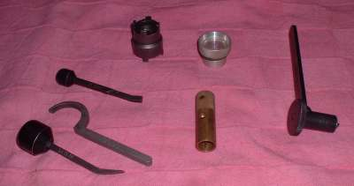
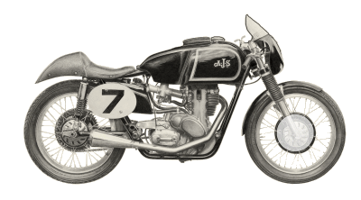
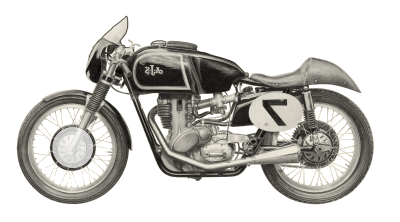

Special Tools 
¶ Special tools. I hate special tools. I love them too because some of them are super neat. However, if you build something right. If you build something you want people to use and use and use. Something you are really proud of, you are not going to require a mechanic to have dozens of special tools to fix it. You want your customer to be able to ride that bike to the uttermost part of the earth and be able to fix a worn out part with simple hand tools.
So why do they have special tools? A few. A very few, are needful but the rest? I think it is just the manufacturers trying to make you go to their dealer and pay top dollar to get your bike fixed. If you don't have or can't afford the special tool you can't fix your bike. So special tools is something we have to live with.
Special tools seem to come in three flavors.
- Tools specific to one procedure on one model of engine or frame. Like a clutch basket puller with a special thread.
- Tools specific to one procedure on more then one model of engine or frame from the same manufacturer. Like most Flywheel pullers.
- Tools specific to one procedure on a large number of engines or frames from many different manufacturers. Like a piston pin puller.
This can be very frustrating for a mechanic. If you have to buy two or three special tools, at $30 to $80 each or more, it really cuts into your labor profits. I remember buying a $50 special tool for one job and it was years before another bike with the same engine came in and I could use it again. Most irritating.
However irritating, special tools are there for a reason. If you try to substitute some other tool you better be very careful. There usually are reasons why you have to use a special tool. I have seen guys try to use a three leg bearing puller to try and get a flywheel off. Sometimes they get away with it and sometimes it cracks the flywheel. But all is not lost if you need a special tool and have no bucks to buy one. You can make one.

 |
 |
Copyright © 1999-2013 dansmc.com. All rights reserved.